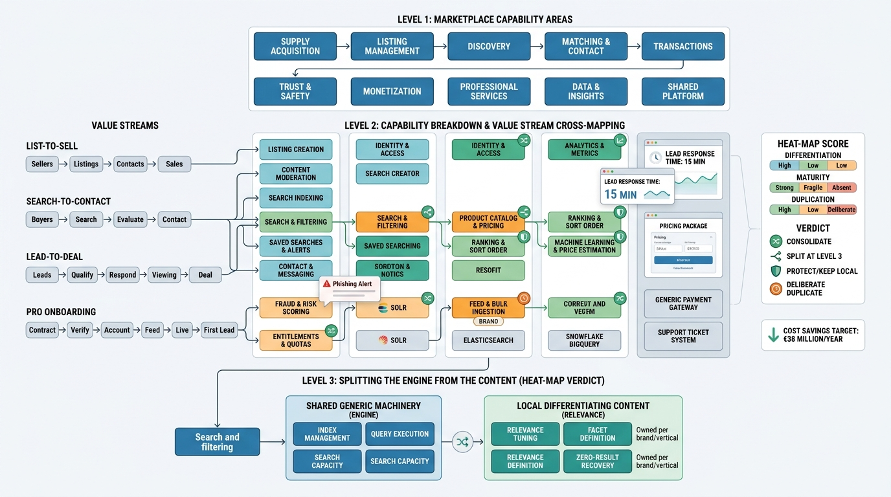

Part I — MARKETPLACE: The Business Behind the Listings
Map What the Marketplace Does Before What Runs It

Image generated by Google Gemini (gemini-3-pro-image-preview)
Part I — MARKETPLACE: The Business Behind the Listings

Image generated by Google Gemini (gemini-3-pro-image-preview)